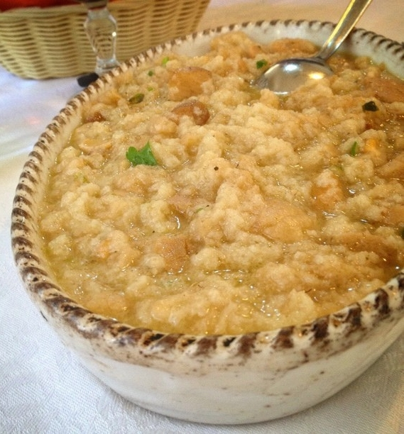

Water Soup

By Giorgio Minguzzi from Italy - File:Acquacotta_soup.jpg, CC BY-SA 2.0, Link
Description
Water soup, better known as acquacotta (translating literally to 'cooked water'), is an Italian broth-based bread soup that was originally a peasant food. Its preparation and consumption dates back to ancient history, and it originated in the coastal area known as the Maremma, in southern Tuscany and northern Lazio. The dish was invented in part as a means to make hardened, stale bread edible. In contemporary times, ingredients can vary, and additional ingredients are sometimes used. Variations of the dish include acquacotta con funghi and acquacotta con peperoni.
Ingredients
- 1/4 cup extra-virgin olive oil, plus more for drizzling
- 1/2 teaspoon red pepper flakes
- 1 large or 2 small yellow onions, thinly sliced
- 1 large celery stalk, finely diced
- 1 clove garlic, minced
- 1 teaspoon kosher salt, plus more for seasoning
- 1 (28-ounce) can whole peeled tomatoes
- 4 cups chicken or vegetable broth
- 2 cups water
- 4 large eggs
- 4 slices stale Tuscan bread or crusty sourdough, torn into 1-inch cubes
- 1/4 cup freshly grated Pecorino romano cheese
Steps
- Sauté the vegetables. In a large Dutch oven, heat the oil and red pepper flakes over medium heat until sizzling, 1 to 2 minutes. Add the onion, celery, garlic, and salt and sauté until the vegetables are well softened and golden brown, 10 to 15 minutes.
- Simmer the soup. Transfer the tomatoes to a medium bowl. Squeeze the whole tomatoes with your hands until crushed into small pieces. Add the crushed tomatoes to the pot, along with the broth, water, and a big pinch of salt.Bring to a boil over medium-high heat, then reduce the heat to medium-low and simmer the soup until thickened but still soupy, 30 to 40 minutes.
- Poach the eggs. Season the soup one last time with salt as desired. Crack each egg, one at a time, into four places in the surface of the soup, leaving a little room in between them. Cover the pot with a lid and simmer until the whites are opaque and cooked through, 3 to 5 minutes.
- Serve. Divide the bread among 4 soup bowls. Use a deep kitchen spoon to carefully remove each egg from the pot and transfer them to the bowls. Fill the bowls with the broth around the egg, garnish with the Pecorino cheese, drizzle with extra olive oil, and serve. Leftover soup (without the eggs) can be stored in an airtight container in the fridge for 3 to 5 days. Reheat the soup until simmering, adding a splash of water if needed to loosen the broth. Once simmering, you can poach additional eggs in the broth and serve.
Home
{kind=link}